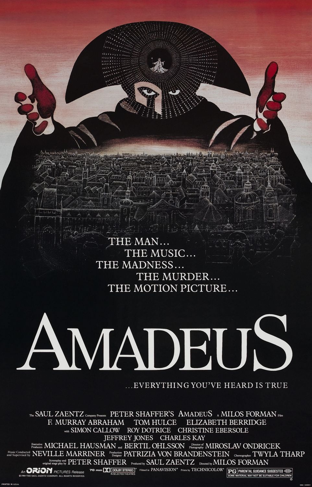
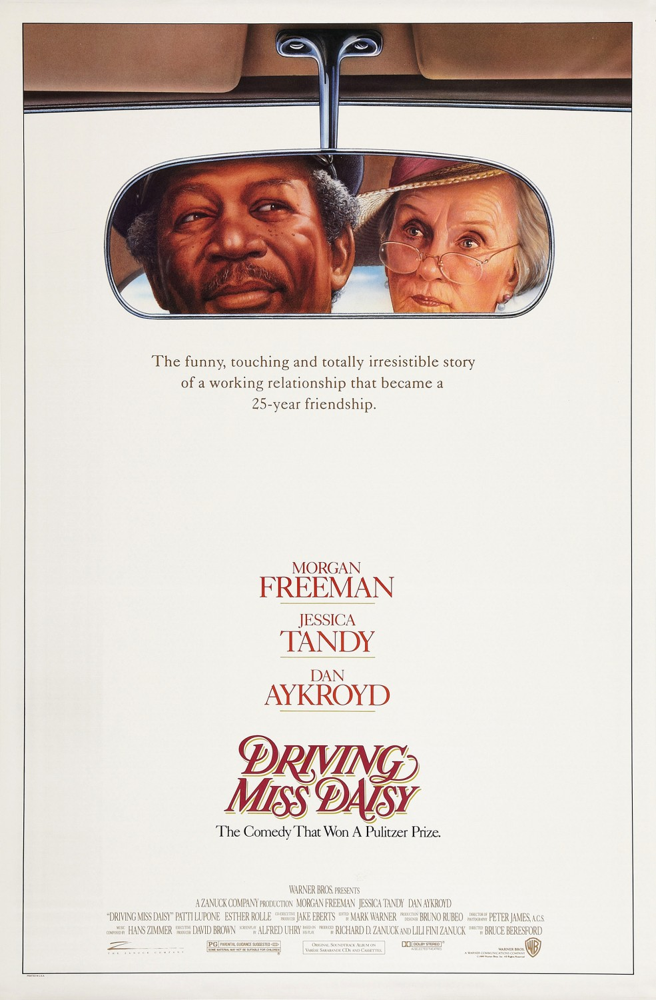
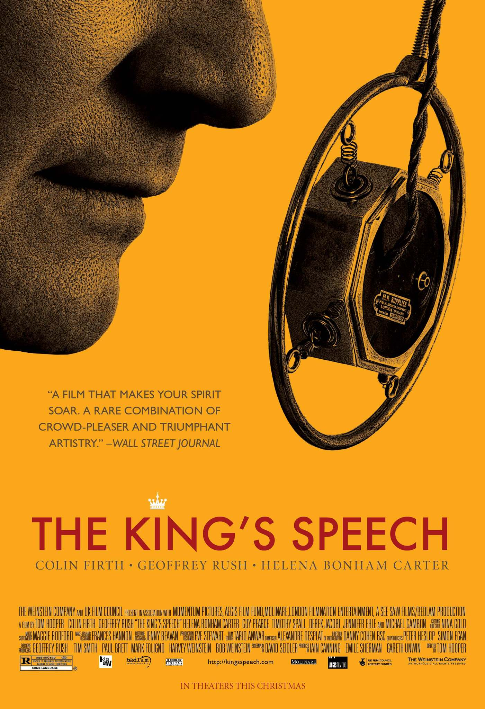
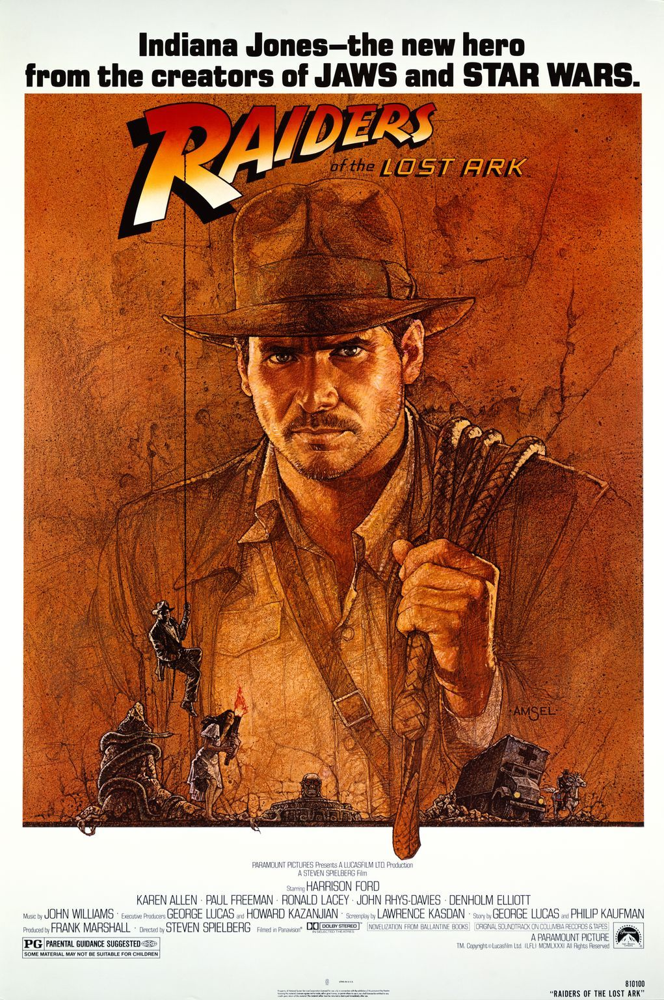
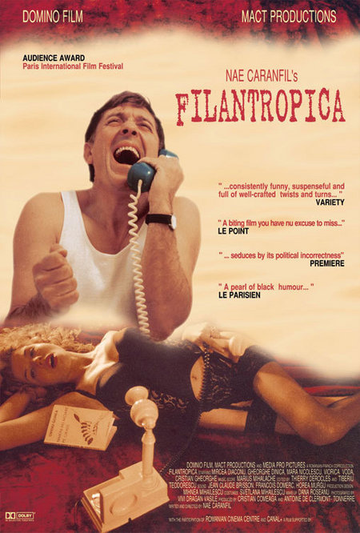

The Lord of the Rings: The Fellowship of the Ring (2001
Stăpânul Inelelor: Frăția Inelului

In the Second Age of Middle-earth, the lords of Elves, Dwarves, and Men are given Rings of Power. Unbeknownst to them, the Dark Lord Sauron forges the One Ring in Mount Doom, instilling into it a great part of his power, in order to dominate the other Rings so he might conquer Middle-earth. A final alliance of Men and Elves battles Sauron's forces in Mordor. Isildur of Gondor severs Sauron's finger and the Ring with it, thereby vanquishing Sauron and returning him to spirit form. With Sauron's first defeat, the Third Age of Middle-earth begins. The Ring's influence corrupts Isildur, who takes it for himself. Isildur is later killed by Orcs and the Ring is lost in a river for 2,500 years until it is found by Gollum, who owns it for five centuries. The Ring is then found by a hobbit named Bilbo Baggins, who is unaware of its history.
Sixty years later, Bilbo celebrates his 111th birthday in the Shire, reuniting with his old friend, the wizard Gandalf the Grey. Bilbo reveals that he intends to leave the Shire for one last adventure, and he leaves his inheritance, including the Ring, to his nephew Frodo. Gandalf investigates the Ring, discovers its true nature, and learns that Gollum was captured and tortured by Sauron's Orcs, revealing two words during his interrogation: "Shire" and "Baggins." Gandalf returns and warns Frodo to leave the Shire. As Frodo departs with his friend, gardener Samwise Gamgee, Gandalf rides to Isengard to meet with the wizard Saruman, but learns that he has joined forces with Sauron, who has dispatched his nine undead Nazgûl servants to find Frodo.
Frodo and Sam are joined by fellow hobbits Merry and Pippin, and they evade the Nazgûl before arriving in Bree, where they are meant to meet Gandalf. However, Gandalf never arrives, having been taken prisoner by Saruman. The hobbits are then aided by a Ranger named Strider, who promises to escort them to Rivendell; however, they are ambushed by the Nazgûl on Weathertop, and their leader, the Witch-King, stabs Frodo with a Morgul blade. Arwen, an Elf and Strider's beloved, locates Strider and rescues Frodo, summoning flood-waters that sweep the Nazgûl away. She takes him to Rivendell, where he is healed by the Elves. Frodo meets with Gandalf, who escaped Isengard with help from a Great Eagle. That night, Strider reunites with Arwen, and they affirm their love for each other.
Sixty years later, Bilbo celebrates his 111th birthday in the Shire, reuniting with his old friend, the wizard Gandalf the Grey. Bilbo reveals that he intends to leave the Shire for one last adventure, and he leaves his inheritance, including the Ring, to his nephew Frodo. Gandalf investigates the Ring, discovers its true nature, and learns that Gollum was captured and tortured by Sauron's Orcs, revealing two words during his interrogation: "Shire" and "Baggins." Gandalf returns and warns Frodo to leave the Shire. As Frodo departs with his friend, gardener Samwise Gamgee, Gandalf rides to Isengard to meet with the wizard Saruman, but learns that he has joined forces with Sauron, who has dispatched his nine undead Nazgûl servants to find Frodo.
Frodo and Sam are joined by fellow hobbits Merry and Pippin, and they evade the Nazgûl before arriving in Bree, where they are meant to meet Gandalf. However, Gandalf never arrives, having been taken prisoner by Saruman. The hobbits are then aided by a Ranger named Strider, who promises to escort them to Rivendell; however, they are ambushed by the Nazgûl on Weathertop, and their leader, the Witch-King, stabs Frodo with a Morgul blade. Arwen, an Elf and Strider's beloved, locates Strider and rescues Frodo, summoning flood-waters that sweep the Nazgûl away. She takes him to Rivendell, where he is healed by the Elves. Frodo meets with Gandalf, who escaped Isengard with help from a Great Eagle. That night, Strider reunites with Arwen, and they affirm their love for each other.
Les Choristes (2004
Corul
In 2003, Pierre Morhange (Jacques Perrin), a French conductor performing in the United States, is informed before a concert that his mother has died. After the performance he returns to his home in France for her funeral. An old friend named Pépinot (Didier Flamand) arrives at his door with a diary which belonged to their teacher, Clément Mathieu. They proceed to read it together.
In 1949, fifty-four years earlier, Clément Mathieu (Gérard Jugnot), a failed musician, arrives at Fond de l'Étang ("Bottom of the Pond"), a French boarding school for troubled boys, to work as a supervisor and teacher. At the gate, he sees a very young boy, Pépinot (Maxence Perrin), waiting for Saturday, when he says his father will pick him up. The viewers later learn that his parents were killed in the Second World War during the Nazi occupation of France, but Pépinot does not know this.
Mathieu discovers the boys being ruthlessly punished by the headmaster Rachin (François Berléand) and attempts to use humour and kindness to win them over. When a booby trap set by one of the boys, Le Querrec, injures the school's elderly caretaker Maxence (Jean-Paul Bonnaire), Mathieu keeps the culprit's identity from the headmaster, while encouraging Le Querrec to nurse Maxence during his recovery.
On discovering the boys singing rude songs about him, Mathieu forms a plan: he will teach them to sing and form a choir as a form of discipline. He groups the boys according to their voice types, but one student, Pierre Morhange (Jean-Baptiste Maunier), refuses to sing. Mathieu catches Morhange singing to himself, discovers he has a wonderful singing voice and awards him solo parts on the condition that he behaves.
Morhange's single mother, Violette (Marie Bunel), arrives at the school. When Mathieu goes to explain that Morhange cannot be visited because he has been locked up as a punishment, he finds himself pitying and being attracted to the boy's beleaguered mother and instead tells her that Morhange is at the dentist. Meanwhile, a cruel, uncontrollable boy named Mondain (Grégory Gatignol) arrives and begins causing trouble by bullying the others and generally being rebellious. After stealing a watch, he is locked up for two weeks.
In 1949, fifty-four years earlier, Clément Mathieu (Gérard Jugnot), a failed musician, arrives at Fond de l'Étang ("Bottom of the Pond"), a French boarding school for troubled boys, to work as a supervisor and teacher. At the gate, he sees a very young boy, Pépinot (Maxence Perrin), waiting for Saturday, when he says his father will pick him up. The viewers later learn that his parents were killed in the Second World War during the Nazi occupation of France, but Pépinot does not know this.
Mathieu discovers the boys being ruthlessly punished by the headmaster Rachin (François Berléand) and attempts to use humour and kindness to win them over. When a booby trap set by one of the boys, Le Querrec, injures the school's elderly caretaker Maxence (Jean-Paul Bonnaire), Mathieu keeps the culprit's identity from the headmaster, while encouraging Le Querrec to nurse Maxence during his recovery.
On discovering the boys singing rude songs about him, Mathieu forms a plan: he will teach them to sing and form a choir as a form of discipline. He groups the boys according to their voice types, but one student, Pierre Morhange (Jean-Baptiste Maunier), refuses to sing. Mathieu catches Morhange singing to himself, discovers he has a wonderful singing voice and awards him solo parts on the condition that he behaves.
Morhange's single mother, Violette (Marie Bunel), arrives at the school. When Mathieu goes to explain that Morhange cannot be visited because he has been locked up as a punishment, he finds himself pitying and being attracted to the boy's beleaguered mother and instead tells her that Morhange is at the dentist. Meanwhile, a cruel, uncontrollable boy named Mondain (Grégory Gatignol) arrives and begins causing trouble by bullying the others and generally being rebellious. After stealing a watch, he is locked up for two weeks.
Forrest Gump (1994
Forrest Gump

In 1981, at a bus stop in Savannah, Georgia, a man named Forrest Gump recounts his life story to strangers who sit next to him on a bench.
In 1951, in Greenbow, Alabama, young Forrest is fitted with leg braces to correct a curved spine, and is unable to walk properly. He lives alone with his mother, who runs a boarding house out of their home that attracts many tenants, including a young Elvis Presley, who plays the guitar for Forrest and incorporates Forrest's jerky dance movements into his performances. On his first day of school, Forrest meets a girl named Jenny Curran, and the two become best friends.
Forrest is often bullied because of his physical disability and low intelligence. While fleeing from several bullies, his leg braces break off, revealing Forrest to be a very fast runner. This talent eventually allows him to receive a football scholarship at the University of Alabama in 1963, where he is coached by Bear Bryant; he witnesses Governor George Wallace's stand in the schoolhouse door at which he returns a dropped book to Vivian Malone Jones, becomes a top kick returner, is named on the All-American team, and meets President John F. Kennedy at the White House.
After graduating college in 1967, Forrest enlists into the U.S. Army. During basic training, he befriends a fellow soldier named Benjamin Buford Blue (nicknamed "Bubba"), who convinces Forrest to go into the shrimping business with him after their service. In 1968, they are sent to Vietnam, serving with the 9th Infantry Division in the Mekong Delta region. After months of routine operations, their platoon is ambushed while on patrol, and Bubba is killed in action. Forrest saves several wounded platoon mates—including his lieutenant, Dan Taylor, who loses both his legs—and is awarded the Medal of Honor for his heroism by President Lyndon B. Johnson.
At the anti-war "March on the Pentagon" rally, Forrest meets a man who "had an American flag for a shirt" and briefly reunites with Jenny, who has been living a hippie lifestyle. He also develops a talent for ping-pong, and becomes a sports celebrity as he competes against Chinese teams in ping-pong diplomacy, earning him an interview alongside John Lennon on The Dick Cavett Show. He spends the holidays and the 1972 new year in New York City with Lieutenant Dan, who has become bitter due to the loss of his legs. Forrest soon meets President Richard Nixon and is put up in the Watergate complex, where he accidentally witnesses and reports some men with flashlights in the building keeping him awake. Forrest is eventually discharged from the army.
In 1951, in Greenbow, Alabama, young Forrest is fitted with leg braces to correct a curved spine, and is unable to walk properly. He lives alone with his mother, who runs a boarding house out of their home that attracts many tenants, including a young Elvis Presley, who plays the guitar for Forrest and incorporates Forrest's jerky dance movements into his performances. On his first day of school, Forrest meets a girl named Jenny Curran, and the two become best friends.
Forrest is often bullied because of his physical disability and low intelligence. While fleeing from several bullies, his leg braces break off, revealing Forrest to be a very fast runner. This talent eventually allows him to receive a football scholarship at the University of Alabama in 1963, where he is coached by Bear Bryant; he witnesses Governor George Wallace's stand in the schoolhouse door at which he returns a dropped book to Vivian Malone Jones, becomes a top kick returner, is named on the All-American team, and meets President John F. Kennedy at the White House.
After graduating college in 1967, Forrest enlists into the U.S. Army. During basic training, he befriends a fellow soldier named Benjamin Buford Blue (nicknamed "Bubba"), who convinces Forrest to go into the shrimping business with him after their service. In 1968, they are sent to Vietnam, serving with the 9th Infantry Division in the Mekong Delta region. After months of routine operations, their platoon is ambushed while on patrol, and Bubba is killed in action. Forrest saves several wounded platoon mates—including his lieutenant, Dan Taylor, who loses both his legs—and is awarded the Medal of Honor for his heroism by President Lyndon B. Johnson.
At the anti-war "March on the Pentagon" rally, Forrest meets a man who "had an American flag for a shirt" and briefly reunites with Jenny, who has been living a hippie lifestyle. He also develops a talent for ping-pong, and becomes a sports celebrity as he competes against Chinese teams in ping-pong diplomacy, earning him an interview alongside John Lennon on The Dick Cavett Show. He spends the holidays and the 1972 new year in New York City with Lieutenant Dan, who has become bitter due to the loss of his legs. Forrest soon meets President Richard Nixon and is put up in the Watergate complex, where he accidentally witnesses and reports some men with flashlights in the building keeping him awake. Forrest is eventually discharged from the army.
Amadeus (1984
Amadeus

In the winter of 1823, Antonio Salieri is committed to a psychiatric hospital after surviving a suicide attempt, during which his servants overhear him confess to murdering Wolfgang Amadeus Mozart. The young priest Father Vogler approaches Salieri for elaboration on Salieri's confession. Salieri recounts how, even in his youth in the 1760s, he desired to be a composer, much to the chagrin of his father. He prays to God that if He will make Salieri a famous composer, he will in return promise his faithfulness. Soon after, his father dies, which Salieri takes as a sign that God has accepted his vow. By 1774, Salieri has become court composer to Emperor Joseph II in Vienna. Seven years later, at a reception in honor of Mozart's patron, the Prince-Archbishop of Salzburg, Salieri is shocked to discover that the transcendentally talented Mozart is obscene and immature. Salieri, a devout Catholic, cannot fathom why God would endow such a great gift to Mozart instead of him and concludes that God is using Mozart's talent to mock Salieri's mediocrity. Salieri renounces God and vows to take revenge on Him by destroying Mozart.
Mozart's alcoholism deteriorates his health, marriage and reputation at court as he continues to produce brilliant work. Salieri hires a young girl to pose as the Mozarts' maid and discovers that Mozart is working on an opera based on the play The Marriage of Figaro, which the Emperor has forbidden. When Mozart is summoned to court to explain, he manages to convince the Emperor to allow his opera to premiere, despite Salieri and the advisers' attempts at sabotage. When Mozart is informed that his father has died, he pens Don Giovanni in his grief. Salieri recognizes the dead commander in the opera as symbolic of Mozart's father and concocts a scheme; he leads Mozart to believe that his father has risen to commission a Requiem. He then plans to kill Mozart once the piece is finished and premiere it at Mozart's funeral, claiming the work as his own. Meanwhile, Mozart's friend Emanuel Schikaneder invites him to write an opera for his theatre. Mozart obliges despite his wife Constanze's insistence that he finish the Requiem. After arguing with Mozart, Constanze leaves with their young son, Karl.
Mozart's alcoholism deteriorates his health, marriage and reputation at court as he continues to produce brilliant work. Salieri hires a young girl to pose as the Mozarts' maid and discovers that Mozart is working on an opera based on the play The Marriage of Figaro, which the Emperor has forbidden. When Mozart is summoned to court to explain, he manages to convince the Emperor to allow his opera to premiere, despite Salieri and the advisers' attempts at sabotage. When Mozart is informed that his father has died, he pens Don Giovanni in his grief. Salieri recognizes the dead commander in the opera as symbolic of Mozart's father and concocts a scheme; he leads Mozart to believe that his father has risen to commission a Requiem. He then plans to kill Mozart once the piece is finished and premiere it at Mozart's funeral, claiming the work as his own. Meanwhile, Mozart's friend Emanuel Schikaneder invites him to write an opera for his theatre. Mozart obliges despite his wife Constanze's insistence that he finish the Requiem. After arguing with Mozart, Constanze leaves with their young son, Karl.
Driving Miss Daisy (1989
Șoferul Doamnei Daisy

In 1948, Daisy Werthan, or Miss Daisy (Jessica Tandy), a 72-year-old wealthy, Jewish, widowed, retired schoolteacher, lives alone in Atlanta, Georgia, except for a black housekeeper, Idella (Esther Rolle). When Miss Daisy drives her 1946 Chrysler Windsor into her neighbor's yard, her 40-year-old son Boolie (Dan Aykroyd) buys her a 1949 Hudson Commodore and hires Hoke Colburn (Morgan Freeman), a black chauffeur. Miss Daisy at first refuses to let anyone else drive her, but gradually accedes to the arrangement.
As Miss Daisy and Hoke spend time together, she gains appreciation for his many skills. After Idella dies during the spring of 1963, rather than hire a new housekeeper, Miss Daisy decides to care for her own house and have Hoke do the cooking and the driving.
The film explores racism against black people, which affects Hoke personally. The film also touches on anti-semitism in the South. After her synagogue is bombed, Miss Daisy realizes that she is also a victim of prejudice. But American society is undergoing radical changes, and Miss Daisy attends a dinner at which Dr. Martin Luther King Jr. gives a speech.
She initially invites Boolie to the dinner, but he declines, and suggests that Miss Daisy invite Hoke. However, Miss Daisy only asks him to be her guest during the car ride to the event and ends up attending the dinner alone, with Hoke, insulted by the manner of the invitation, listening to the speech on the car radio outside.
Hoke arrives at the house one morning in 1971 to find Miss Daisy agitated and showing signs of dementia, believing she is a young teacher again. Hoke calms her down with a conversation in which Daisy calls Hoke her "best friend." Boolie arranges for Miss Daisy to enter a retirement home. In 1973, Hoke, now 85 and rapidly losing his eyesight, retires. Boolie, now 65, drives Hoke to the retirement home to visit Miss Daisy, now 97. He then feeds her pie. The final scene is an image of him driving her for the first time in the red Hudson.
As Miss Daisy and Hoke spend time together, she gains appreciation for his many skills. After Idella dies during the spring of 1963, rather than hire a new housekeeper, Miss Daisy decides to care for her own house and have Hoke do the cooking and the driving.
The film explores racism against black people, which affects Hoke personally. The film also touches on anti-semitism in the South. After her synagogue is bombed, Miss Daisy realizes that she is also a victim of prejudice. But American society is undergoing radical changes, and Miss Daisy attends a dinner at which Dr. Martin Luther King Jr. gives a speech.
She initially invites Boolie to the dinner, but he declines, and suggests that Miss Daisy invite Hoke. However, Miss Daisy only asks him to be her guest during the car ride to the event and ends up attending the dinner alone, with Hoke, insulted by the manner of the invitation, listening to the speech on the car radio outside.
Hoke arrives at the house one morning in 1971 to find Miss Daisy agitated and showing signs of dementia, believing she is a young teacher again. Hoke calms her down with a conversation in which Daisy calls Hoke her "best friend." Boolie arranges for Miss Daisy to enter a retirement home. In 1973, Hoke, now 85 and rapidly losing his eyesight, retires. Boolie, now 65, drives Hoke to the retirement home to visit Miss Daisy, now 97. He then feeds her pie. The final scene is an image of him driving her for the first time in the red Hudson.
The Silence of the Lambs (1991
Tăcerea mieilor

In 1990, Clarice Starling is pulled from her FBI training at the Quantico, Virginia FBI Academy by Jack Crawford of the Bureau's Behavioral Science Unit. He assigns her to interview Hannibal Lecter, a former psychiatrist and incarcerated cannibalistic serial killer. Lecter's insight could prove useful in the pursuit of a serial killer nicknamed "Buffalo Bill", who kills young women and removes their skin.
At the Baltimore State Hospital for the Criminally Insane, Dr. Frederick Chilton makes a crude pass at Starling before he escorts her to Lecter's cell. Although initially pleasant and courteous, Lecter grows impatient with Starling's interviewing and rebuffs her. As she is leaving, a prisoner named Miggs flicks semen at her. Lecter, who considers this an "unspeakably ugly" act, calls Starling back and tells her to seek out his old patient. This leads her to a storage facility, where she discovers a jar containing a man's severed head. She returns to Lecter, who says the man is linked to Buffalo Bill. He offers to profile Buffalo Bill on condition he be transferred away from Chilton, whom he detests. Another Buffalo Bill victim is found who has a death's head moth lodged in her throat.
Buffalo Bill abducts Catherine Martin, a senator's daughter. Crawford authorizes Starling to offer Lecter a fake deal, promising a prison transfer if he provides information that helps them capture Buffalo Bill and rescue Catherine. Instead, Lecter demands a quid pro quo from Starling, offering clues about Buffalo Bill in exchange for personal information. Starling tells Lecter about her father's murder when she was ten years old. Chilton secretly records the conversation and reveals Starling's deceit before offering Lecter a different deal. Lecter agrees and is flown to Memphis, where he meets and torments Senator Martin, then gives her misleading information on Buffalo Bill, including that his name is "Louis Friend".
At the Baltimore State Hospital for the Criminally Insane, Dr. Frederick Chilton makes a crude pass at Starling before he escorts her to Lecter's cell. Although initially pleasant and courteous, Lecter grows impatient with Starling's interviewing and rebuffs her. As she is leaving, a prisoner named Miggs flicks semen at her. Lecter, who considers this an "unspeakably ugly" act, calls Starling back and tells her to seek out his old patient. This leads her to a storage facility, where she discovers a jar containing a man's severed head. She returns to Lecter, who says the man is linked to Buffalo Bill. He offers to profile Buffalo Bill on condition he be transferred away from Chilton, whom he detests. Another Buffalo Bill victim is found who has a death's head moth lodged in her throat.
Buffalo Bill abducts Catherine Martin, a senator's daughter. Crawford authorizes Starling to offer Lecter a fake deal, promising a prison transfer if he provides information that helps them capture Buffalo Bill and rescue Catherine. Instead, Lecter demands a quid pro quo from Starling, offering clues about Buffalo Bill in exchange for personal information. Starling tells Lecter about her father's murder when she was ten years old. Chilton secretly records the conversation and reveals Starling's deceit before offering Lecter a different deal. Lecter agrees and is flown to Memphis, where he meets and torments Senator Martin, then gives her misleading information on Buffalo Bill, including that his name is "Louis Friend".
The King's Speech (2010
Discursul regelui

At the official closing of the British Empire Exhibition at Wembley Stadium, Prince Albert, Duke of York, the second son of King George V, addresses the crowd with a strong stammer. His search for treatment has been discouraging, but his wife, Elizabeth, persuades him to see the Australian-born Lionel Logue, a non-medically trained Harley Street speech defects therapist. "Bertie", as he is called by his family, believes the first session is not going well, but Lionel, who insists that all his patients address him as such, has his potential client recite Hamlet's "To be, or not to be" soliloquy while hearing classical music played on a pair of headphones. Bertie is frustrated at the experiment but Lionel gives him the acetate recording that he has made of the reading as a souvenir.
After Bertie's father, King George V, broadcasts his 1934 Royal Christmas Message, he explains to Bertie that the wireless will play a significant part in the role of the royal family, allowing them to enter the homes of the people, and that Bertie's brother's neglect of his responsibilities make training in it necessary. The attempt at reading the message himself is a failure, but that night Bertie plays the recording Lionel gave him and is astonished at the lack of stutter there. He therefore returns for daily treatments to overcome the physical and psychological roots of his speaking difficulty.
George V dies in 1936, and his eldest son David ascends the throne as King Edward VIII. A constitutional crisis arises with the new king over a prospective marriage with the twice-divorced American socialite Wallis Simpson. Edward, as the supreme governor of the Church of England, cannot marry her, even if she receives her second divorce, since both her previous husbands are alive.
After Bertie's father, King George V, broadcasts his 1934 Royal Christmas Message, he explains to Bertie that the wireless will play a significant part in the role of the royal family, allowing them to enter the homes of the people, and that Bertie's brother's neglect of his responsibilities make training in it necessary. The attempt at reading the message himself is a failure, but that night Bertie plays the recording Lionel gave him and is astonished at the lack of stutter there. He therefore returns for daily treatments to overcome the physical and psychological roots of his speaking difficulty.
George V dies in 1936, and his eldest son David ascends the throne as King Edward VIII. A constitutional crisis arises with the new king over a prospective marriage with the twice-divorced American socialite Wallis Simpson. Edward, as the supreme governor of the Church of England, cannot marry her, even if she receives her second divorce, since both her previous husbands are alive.
Harry Potter and the Prisoner of Azkaban (2004
Harry Potter și Prizonierul din Azkaban

Harry Potter has been spending another unhappy summer with the Dursleys. When Aunt Marge Dursley insults his parents, he loses his temper and accidentally causes her to inflate like a balloon and float away. Fed up, Harry then flees the Dursleys with his broom and trunk. The Knight Bus arrives and takes Harry to the Leaky Cauldron, where he is pardoned by Minister for Magic Cornelius Fudge for using magic outside of Hogwarts. After reuniting with his best friends Ron Weasley and Hermione Granger, Harry learns that Sirius Black, a convicted supporter of the dark wizard Lord Voldemort, has escaped Azkaban prison and intends to kill him.
The trio return to Hogwarts for the school year on the Hogwarts Express train, which is suddenly boarded by dementors, ghostly prison guards that are searching for Sirius. One enters the trio's compartment, causing Harry to pass out, but new Defence Against the Dark Arts teacher Remus Lupin repels the dementor with a Patronus Charm. At Hogwarts, headmaster Albus Dumbledore announces that dementors will be guarding the school until Sirius is captured. Hogwarts groundskeeper Rubeus Hagrid is announced as the new Care of Magical Creatures teacher; his first class goes badly when Draco Malfoy deliberately provokes the hippogriff Buckbeak, who then attacks him. Draco exaggerates his injury, and his father Lucius Malfoy later has Buckbeak sentenced to death.
The Fat Lady's portrait, which guards the Gryffindor rooms, is found ruined and empty. Terrified and hiding in another painting, she tells Dumbledore that Sirius has entered the castle. During a stormy Quidditch match against Hufflepuff, dementors attack Harry, causing him to fall off his broomstick which lands at the Whomping Willow, where it is destroyed. At Hogsmeade, Harry is shocked to learn that not only had Sirius been his father's best friend and apparently betrayed them to Voldemort, but is also Harry's godfather. Lupin privately teaches Harry to defend himself against dementors using the Patronus Charm.
The trio return to Hogwarts for the school year on the Hogwarts Express train, which is suddenly boarded by dementors, ghostly prison guards that are searching for Sirius. One enters the trio's compartment, causing Harry to pass out, but new Defence Against the Dark Arts teacher Remus Lupin repels the dementor with a Patronus Charm. At Hogwarts, headmaster Albus Dumbledore announces that dementors will be guarding the school until Sirius is captured. Hogwarts groundskeeper Rubeus Hagrid is announced as the new Care of Magical Creatures teacher; his first class goes badly when Draco Malfoy deliberately provokes the hippogriff Buckbeak, who then attacks him. Draco exaggerates his injury, and his father Lucius Malfoy later has Buckbeak sentenced to death.
The Fat Lady's portrait, which guards the Gryffindor rooms, is found ruined and empty. Terrified and hiding in another painting, she tells Dumbledore that Sirius has entered the castle. During a stormy Quidditch match against Hufflepuff, dementors attack Harry, causing him to fall off his broomstick which lands at the Whomping Willow, where it is destroyed. At Hogsmeade, Harry is shocked to learn that not only had Sirius been his father's best friend and apparently betrayed them to Voldemort, but is also Harry's godfather. Lupin privately teaches Harry to defend himself against dementors using the Patronus Charm.
The Godfather (1972
Nașul

In 1945 New York City, at his daughter Connie's wedding to Carlo, Vito Corleone, the don of the Corleone crime family listens to requests. His youngest son, Michael, who was a Marine during World War II, introduces his girlfriend, Kay Adams, to his family at the reception. Johnny Fontane, a popular singer and Vito's godson, seeks Vito's help in securing a movie role; Vito dispatches his consigliere, Tom Hagen, to Los Angeles to persuade studio head Jack Woltz to give Johnny the part. Woltz refuses until he wakes up in bed with the severed head of his prized stallion.
Shortly before Christmas, drug baron Sollozzo, backed by the Tattaglia crime family, asks Vito for investment in his narcotics business and protection through his political connections. Wary of involvement in a dangerous new trade that risks alienating political insiders, Vito declines. Suspicious, Vito sends his enforcer, Luca Brasi, to spy on them. Brasi is garroted to death during his first meeting with Bruno Tattaglia and Sollozzo. Later, Sollozzo kidnaps Hagen, then has Vito gunned down in the street. Vito's eldest son Sonny takes command, Sollozzo pressures Hagen to persuade Sonny to accept Sollozzo's deal, then releases him. The family receives fish wrapped in Brasi's bullet-proof vest, indicating that Luca "sleeps with the fishes". Vito survives, and at the hospital, Michael thwarts another attempt on his father. Michael's jaw is broken by NYPD Capt. McCluskey, Sollozzo's unofficial bodyguard. Sonny retaliates with a hit on Tattaglia's son. The Corleones plot to murder Sollozzo and McCluskey; feigning a desire to settle the dispute, Michael meets them in a Bronx restaurant in which, after retrieving a handgun planted by Peter Clemenza, a Corleone capo, he kills both men.
Despite a clampdown by the authorities, war breaks out between the Five Families and Vito fears for his family. Michael takes refuge in Sicily and his elder brother Fredo is sheltered by Moe Greene in Las Vegas. Sonny attacks Carlo on the street for abusing Connie and threatens to kill him if it happens again. When it does, Sonny speeds to their home but is ambushed at a highway toll booth and violently murdered by rival gangsters wielding submachine guns. While in Sicily, Michael meets and marries Apollonia, but a car bomb intended for him takes her life.
Shortly before Christmas, drug baron Sollozzo, backed by the Tattaglia crime family, asks Vito for investment in his narcotics business and protection through his political connections. Wary of involvement in a dangerous new trade that risks alienating political insiders, Vito declines. Suspicious, Vito sends his enforcer, Luca Brasi, to spy on them. Brasi is garroted to death during his first meeting with Bruno Tattaglia and Sollozzo. Later, Sollozzo kidnaps Hagen, then has Vito gunned down in the street. Vito's eldest son Sonny takes command, Sollozzo pressures Hagen to persuade Sonny to accept Sollozzo's deal, then releases him. The family receives fish wrapped in Brasi's bullet-proof vest, indicating that Luca "sleeps with the fishes". Vito survives, and at the hospital, Michael thwarts another attempt on his father. Michael's jaw is broken by NYPD Capt. McCluskey, Sollozzo's unofficial bodyguard. Sonny retaliates with a hit on Tattaglia's son. The Corleones plot to murder Sollozzo and McCluskey; feigning a desire to settle the dispute, Michael meets them in a Bronx restaurant in which, after retrieving a handgun planted by Peter Clemenza, a Corleone capo, he kills both men.
Despite a clampdown by the authorities, war breaks out between the Five Families and Vito fears for his family. Michael takes refuge in Sicily and his elder brother Fredo is sheltered by Moe Greene in Las Vegas. Sonny attacks Carlo on the street for abusing Connie and threatens to kill him if it happens again. When it does, Sonny speeds to their home but is ambushed at a highway toll booth and violently murdered by rival gangsters wielding submachine guns. While in Sicily, Michael meets and marries Apollonia, but a car bomb intended for him takes her life.
Knives Out (2019
La cuțite

The family of Harlan Thrombey (Christopher Plummer), a wealthy mystery novelist, attends his 85th birthday party at his Massachusetts mansion. The next morning, Harlan's housekeeper, Fran (Edi Patterson), finds him dead with his throat slit. The police believe Harlan's death to be suicide, but an anonymous party pays private detective Benoit Blanc (Daniel Craig) to investigate the case.
Blanc learns that Harlan's relationships with his various family members were strained: on the day of his death, Harlan had threatened to expose his son-in-law Richard (Don Johnson) for cheating on his wife, Harlan's daughter Linda (Jamie Lee Curtis), cut off his daughter-in-law Joni's (Toni Collette) allowance for stealing from him, fired his son Walt (Michael Shannon) from his publishing company, and had an altercation with his grandson Ransom (Chris Evans), who stormed out of the house.
Unbeknownst to Blanc, after the party, Harlan's nurse, Marta Cabrera (Ana de Armas), mixed up his medications and apparently administered an overdose of morphine; she could not find the antidote, leaving Harlan minutes to live. Knowing that Marta's mother is an undocumented immigrant, Harlan prevented Marta from calling for help and instead gave her instructions to create a false alibi to save her family from scrutiny, before slitting his own throat. Harlan's very elderly mother saw Marta carrying out his instructions, but mistook her for Ransom.
Marta cannot lie without vomiting, so she gives true but incomplete answers when Blanc questions her. She agrees to assist in Blanc's investigation and conceals evidence of her actions as they search the property. When Harlan's will is read, to everyone's astonishment, Marta is the sole beneficiary. Ransom helps her escape the family's wrath, but manipulates her into confessing to him. He offers his help in exchange for a share of the inheritance. The other Thrombeys try to persuade Marta to renounce the inheritance; Walt threatens to expose her mother's precarious immigration status. Marta receives an anonymous blackmail note with a partial photocopy of Harlan's toxicology report. She and Ransom drive to the medical examiner's office, but the building has been burned down. Marta receives an anonymous email proposing a rendezvous with the blackmailer. Blanc and the police spot Marta and Ransom, and, after a brief car chase, Ransom is arrested. Blanc explains that Harlan's mother saw Ransom climbing down from Harlan's room the night he died.
Blanc learns that Harlan's relationships with his various family members were strained: on the day of his death, Harlan had threatened to expose his son-in-law Richard (Don Johnson) for cheating on his wife, Harlan's daughter Linda (Jamie Lee Curtis), cut off his daughter-in-law Joni's (Toni Collette) allowance for stealing from him, fired his son Walt (Michael Shannon) from his publishing company, and had an altercation with his grandson Ransom (Chris Evans), who stormed out of the house.
Unbeknownst to Blanc, after the party, Harlan's nurse, Marta Cabrera (Ana de Armas), mixed up his medications and apparently administered an overdose of morphine; she could not find the antidote, leaving Harlan minutes to live. Knowing that Marta's mother is an undocumented immigrant, Harlan prevented Marta from calling for help and instead gave her instructions to create a false alibi to save her family from scrutiny, before slitting his own throat. Harlan's very elderly mother saw Marta carrying out his instructions, but mistook her for Ransom.
Marta cannot lie without vomiting, so she gives true but incomplete answers when Blanc questions her. She agrees to assist in Blanc's investigation and conceals evidence of her actions as they search the property. When Harlan's will is read, to everyone's astonishment, Marta is the sole beneficiary. Ransom helps her escape the family's wrath, but manipulates her into confessing to him. He offers his help in exchange for a share of the inheritance. The other Thrombeys try to persuade Marta to renounce the inheritance; Walt threatens to expose her mother's precarious immigration status. Marta receives an anonymous blackmail note with a partial photocopy of Harlan's toxicology report. She and Ransom drive to the medical examiner's office, but the building has been burned down. Marta receives an anonymous email proposing a rendezvous with the blackmailer. Blanc and the police spot Marta and Ransom, and, after a brief car chase, Ransom is arrested. Blanc explains that Harlan's mother saw Ransom climbing down from Harlan's room the night he died.
Star Wars: Episode IV - A New Hope (1977
Războiul Stelelor - Episodul IV: O Nouă Speranță

Amid a galactic civil war, Rebel Alliance spies have stolen plans to the Galactic Empire's Death Star, a massive space station capable of destroying an entire planet. Imperial Senator Princess Leia of Alderaan, secretly one of the Rebellion's leaders, has obtained its schematics, but her starship is intercepted by an Imperial Star Destroyer under the command of the ruthless Darth Vader. Before she is captured, Leia hides the plans in the memory of astromech droid R2-D2, who flees in an escape pod to the desert planet Tatooine accompanied by protocol droid C-3PO.
The droids are captured by Jawa traders, who sell them to moisture farmers Owen and Beru Lars and their nephew Luke Skywalker. While cleaning R2-D2, Luke accidentally triggers part of a holographic recording of Leia, in which she requests help from Obi-Wan Kenobi. Later, after Luke finds R2-D2 missing, he is attacked by scavenging Sand People while searching for him, but is rescued by elderly hermit "Old Ben" Kenobi, an acquaintance of Luke's, who reveals that "Obi-Wan" is his true name. Obi-Wan tells Luke of his days as one of the Jedi Knights, the former peacekeepers of the Galactic Republic who drew mystical abilities from a metaphysical energy field known as "the Force", but were ultimately hunted to near-extinction by the Empire. Luke learns that his father fought alongside Obi-Wan as a Jedi Knight during the Clone Wars until Vader, Obi-Wan's former pupil, turned to the dark side of the Force and murdered him. Obi-Wan presents Luke with his father's old lightsaber, the signature weapon of Jedi Knights.
R2-D2 plays Leia's full message, in which she begs Obi-Wan to take the Death Star plans to her home planet of Alderaan and give them to her father, a fellow veteran, for analysis. Although Luke initially declines Obi-Wan's offer to accompany him to Alderaan and learn the ways of the Force, he is left with no choice after discovering that Imperial stormtroopers have killed his aunt and uncle and destroyed their farm in their search for the droids. Traveling to a cantina in Mos Eisley to search for transport, Luke and Obi-Wan hire Han Solo, a smuggler with a price on his head due to his debt to local mobster Jabba the Hutt. Pursued by stormtroopers, Obi-Wan, Luke, R2-D2 and C-3PO flee Tatooine with Han and his Wookiee co-pilot Chewbacca on their ship the Millennium Falcon. As they reach the planet's orbit, two Star Destroyers try to intercept them, but Han is able to jump to hyperspace by reaching lightspeed.
The droids are captured by Jawa traders, who sell them to moisture farmers Owen and Beru Lars and their nephew Luke Skywalker. While cleaning R2-D2, Luke accidentally triggers part of a holographic recording of Leia, in which she requests help from Obi-Wan Kenobi. Later, after Luke finds R2-D2 missing, he is attacked by scavenging Sand People while searching for him, but is rescued by elderly hermit "Old Ben" Kenobi, an acquaintance of Luke's, who reveals that "Obi-Wan" is his true name. Obi-Wan tells Luke of his days as one of the Jedi Knights, the former peacekeepers of the Galactic Republic who drew mystical abilities from a metaphysical energy field known as "the Force", but were ultimately hunted to near-extinction by the Empire. Luke learns that his father fought alongside Obi-Wan as a Jedi Knight during the Clone Wars until Vader, Obi-Wan's former pupil, turned to the dark side of the Force and murdered him. Obi-Wan presents Luke with his father's old lightsaber, the signature weapon of Jedi Knights.
R2-D2 plays Leia's full message, in which she begs Obi-Wan to take the Death Star plans to her home planet of Alderaan and give them to her father, a fellow veteran, for analysis. Although Luke initially declines Obi-Wan's offer to accompany him to Alderaan and learn the ways of the Force, he is left with no choice after discovering that Imperial stormtroopers have killed his aunt and uncle and destroyed their farm in their search for the droids. Traveling to a cantina in Mos Eisley to search for transport, Luke and Obi-Wan hire Han Solo, a smuggler with a price on his head due to his debt to local mobster Jabba the Hutt. Pursued by stormtroopers, Obi-Wan, Luke, R2-D2 and C-3PO flee Tatooine with Han and his Wookiee co-pilot Chewbacca on their ship the Millennium Falcon. As they reach the planet's orbit, two Star Destroyers try to intercept them, but Han is able to jump to hyperspace by reaching lightspeed.
Raiders of the Lost Ark (1981
Indiana Jones și căutătorii arcei pierdute

In 1936, American archaeologist Indiana Jones recovers a golden idol from a booby-trapped Peruvian temple. Cornered by rival archaeologist René Belloq, the idol is stolen and Jones escapes in a waiting seaplane. After returning to America, Jones is approached by two Army Intelligence agents. They reveal Nazis are excavating Tanis, and one of their telegrams mentions Jones's old mentor Abner Ravenwood. Jones deduces the Nazis are searching for the Ark of the Covenant, which Adolf Hitler believes will make their army invincible. The agents recruit Jones to recover the Ark first.
At a bar in Nepal, Jones reunites with Ravenwood's daughter Marion—with whom Jones once had an illicit affair—and learns Ravenwood is dead. The bar is set ablaze during a scuffle with Gestapo agent Arnold Toht, who arrives to take a medallion from Marion. Toht attempts to recover the medallion from the flames, but only burns its image into his hand. Jones and Marion take the medallion and escape together.
They travel to Cairo, where they meet Jones' friend Sallah. He reveals Belloq is assisting the Nazis, and they have fashioned an incomplete replica medallion from the burns on Toht's hand. Nazi soldiers and mercenaries attack Jones, and Marion is seemingly killed, leaving Jones despondent. An imam deciphers the medallion for Jones; one side bears a warning not to disturb the Ark, the other the correct measurements for the "staff of Ra", an item used to locate the Ark; Jones and Sallah realize the Nazis are digging in the wrong location. They infiltrate the Nazi dig site and use the medallion and the correct staff of Ra to locate the Well of Souls, the Ark's resting place. They recover the Ark—a golden, intricately decorated chest—but are discovered by Belloq and the Nazis, who seize the Ark and seal Jones and Marion—who has been held captive by Belloq—inside the well. The pair escape through an opening and flee with a truck carrying the Ark. Alongside Marion, Jones arranges to transport the Ark to London aboard a tramp steamer.
At a bar in Nepal, Jones reunites with Ravenwood's daughter Marion—with whom Jones once had an illicit affair—and learns Ravenwood is dead. The bar is set ablaze during a scuffle with Gestapo agent Arnold Toht, who arrives to take a medallion from Marion. Toht attempts to recover the medallion from the flames, but only burns its image into his hand. Jones and Marion take the medallion and escape together.
They travel to Cairo, where they meet Jones' friend Sallah. He reveals Belloq is assisting the Nazis, and they have fashioned an incomplete replica medallion from the burns on Toht's hand. Nazi soldiers and mercenaries attack Jones, and Marion is seemingly killed, leaving Jones despondent. An imam deciphers the medallion for Jones; one side bears a warning not to disturb the Ark, the other the correct measurements for the "staff of Ra", an item used to locate the Ark; Jones and Sallah realize the Nazis are digging in the wrong location. They infiltrate the Nazi dig site and use the medallion and the correct staff of Ra to locate the Well of Souls, the Ark's resting place. They recover the Ark—a golden, intricately decorated chest—but are discovered by Belloq and the Nazis, who seize the Ark and seal Jones and Marion—who has been held captive by Belloq—inside the well. The pair escape through an opening and flee with a truck carrying the Ark. Alongside Marion, Jones arranges to transport the Ark to London aboard a tramp steamer.
2001: A Space Odyssey (1968
2001: O odisee spațială

In the prehistoric African veldt, a tribe of hominids is driven away from its water hole by a rival tribe. Later, they awaken to find an alien monolith has appeared in their midst. Influenced by the monolith, they discover how to use a bone as a weapon and, after their first hunt, return to drive their rivals away with the newly discovered tool.
Millions of years later, Dr. Heywood Floyd, Chairman of the United States National Council of Astronautics, travels to Clavius Base, a US lunar outpost. During a stopover at Space Station 5, he meets Russian scientists who are concerned that Clavius seems to be unresponsive. Floyd refuses to discuss rumours of an epidemic at the base. Continuing his journey to Clavius, Floyd addresses a meeting of personnel to whom he stresses the need for secrecy with respect to their newest discovery. Floyd's mission is to investigate a recently found artefact buried four million years ago near the lunar crater Tycho. Floyd and others ride in a Moonbus to the artefact, a monolith identical to the one encountered by the ape-men. As they examine the monolith, it is struck by sunlight, upon which it emits a high-powered radio signal.
Eighteen months later, the United States spacecraft Discovery One is bound for Jupiter. On board are mission pilots and scientists Dr. David Bowman and Dr. Frank Poole, along with three other scientists in suspended animation. Most of Discovery's operations are controlled by "HAL", a HAL 9000 computer with a human personality. A conversation between HAL and Bowman is interrupted when HAL reports the imminent failure of an antenna control device. Bowman retrieves it in an extravehicular activity (EVA) pod but finds nothing wrong. HAL suggests reinstalling the device and letting it fail so the problem can be verified. Mission Control advises the astronauts that results from their twin HAL 9000 computer indicate that HAL is in error about the device's imminent failure. HAL attributes the discrepancy to human error. Concerned about HAL's behaviour, Bowman and Poole enter an EVA pod so they can talk without HAL overhearing, and agree to disconnect HAL if he is proven wrong. HAL follows their conversation by lip reading.
While Poole is on a space walk attempting to replace the antenna unit, HAL takes control of his pod, severs Poole's oxygen hose, and sets him adrift. Bowman takes another pod to rescue Poole; while he is outside, HAL turns off the life support functions of the three other crewmen in suspended animation, killing them. When Bowman returns to the ship with Poole's body, HAL refuses to let him in, saying "I'm sorry Dave, I'm afraid I can't do that". HAL states that the astronauts' plan to deactivate him jeopardises the mission. Bowman opens the ship's emergency airlock manually, enters the ship, and proceeds to HAL's processor core, where he begins disconnecting HAL's circuits. HAL tries to reassure and assuage Bowman, then pleads with him to stop, and then expresses fear for himself. When the disconnection is complete, a prerecorded video message plays, revealing that the mission's objective is to investigate the radio signal sent from the monolith to Jupiter.
Millions of years later, Dr. Heywood Floyd, Chairman of the United States National Council of Astronautics, travels to Clavius Base, a US lunar outpost. During a stopover at Space Station 5, he meets Russian scientists who are concerned that Clavius seems to be unresponsive. Floyd refuses to discuss rumours of an epidemic at the base. Continuing his journey to Clavius, Floyd addresses a meeting of personnel to whom he stresses the need for secrecy with respect to their newest discovery. Floyd's mission is to investigate a recently found artefact buried four million years ago near the lunar crater Tycho. Floyd and others ride in a Moonbus to the artefact, a monolith identical to the one encountered by the ape-men. As they examine the monolith, it is struck by sunlight, upon which it emits a high-powered radio signal.
Eighteen months later, the United States spacecraft Discovery One is bound for Jupiter. On board are mission pilots and scientists Dr. David Bowman and Dr. Frank Poole, along with three other scientists in suspended animation. Most of Discovery's operations are controlled by "HAL", a HAL 9000 computer with a human personality. A conversation between HAL and Bowman is interrupted when HAL reports the imminent failure of an antenna control device. Bowman retrieves it in an extravehicular activity (EVA) pod but finds nothing wrong. HAL suggests reinstalling the device and letting it fail so the problem can be verified. Mission Control advises the astronauts that results from their twin HAL 9000 computer indicate that HAL is in error about the device's imminent failure. HAL attributes the discrepancy to human error. Concerned about HAL's behaviour, Bowman and Poole enter an EVA pod so they can talk without HAL overhearing, and agree to disconnect HAL if he is proven wrong. HAL follows their conversation by lip reading.
While Poole is on a space walk attempting to replace the antenna unit, HAL takes control of his pod, severs Poole's oxygen hose, and sets him adrift. Bowman takes another pod to rescue Poole; while he is outside, HAL turns off the life support functions of the three other crewmen in suspended animation, killing them. When Bowman returns to the ship with Poole's body, HAL refuses to let him in, saying "I'm sorry Dave, I'm afraid I can't do that". HAL states that the astronauts' plan to deactivate him jeopardises the mission. Bowman opens the ship's emergency airlock manually, enters the ship, and proceeds to HAL's processor core, where he begins disconnecting HAL's circuits. HAL tries to reassure and assuage Bowman, then pleads with him to stop, and then expresses fear for himself. When the disconnection is complete, a prerecorded video message plays, revealing that the mission's objective is to investigate the radio signal sent from the monolith to Jupiter.
Filantropica (2002
Filantropica

Ovidiu Gorea is a jaded high-school teacher and novice writer in his mid-40s who is still living with his parents. He has just published a collection of short stories titled Nobody Dies for Free that the bookstores reject because no one buys it.
The high school principal asks him to deal with a problem-student, Robert. Ovidiu has Robert call one of his parents for talks, but the boy sends his sister, Diana, a gorgeous teenager, instead. Ovidiu is smitten. He convinces Diana to go on a date with him, but what he thinks will be a quiet evening over coffee turns into a bar-hopping binge that leaves him nearly broke.
One night, he meets a shabby-looking drunk beggar who offers to recite poems in exchange for vodka. The two start talking and Ovidiu learns that the guy makes two or three times more money than him in a month out of this. He asks for an explanation and the beggar refers him to the Filantropica Foundation.
Located in a desolate basement, the Filantropica Foundation is actually the lair of Bucharest's beggars' leader, Pavel Puiuţ. A former convict, he realized that begging leads nowhere "unless there is a touching story behind the hand that begs", so he created an organized network of beggars, each with an invented, tear-jerking, background story that yields millions. Puiuţ listens to Ovidiu's story and thinks he is perfect for his new "project".
He pairs Ovidiu with Miruna, his secretary, and sends them to high-profile restaurants, where, in collusion with a waiter, they pose as a couple of poor teachers celebrating their wedding anniversary who find, at the end of their dinner, that they don't have enough money to cover the check; Ovidiu is responsible with making a scene that would strike a chord with one of the rich people present, who would pick up their check out of pity; later, out in the back, Ovidiu, Miruna and the waiter would split the money.
After several such performances, Ovidiu makes enough money to impress the materialistic Diana. He rents a roadster, takes her to lakeshore clubs, and impresses her friends, his sole purpose being sleeping with her. The reluctant Puiuţ even gives him access to the foundation's "show-house" (a day-rental house meant to impress third parties), but a poorly timed customer call gives Ovidiu's cover away and an angry Diana leaves him.
Meanwhile, Miruna falls for her partner in crime and is angry that he keeps "bitching" about that "bimbo", instead of going for a "real woman". She manages to get him into her bed and Ovidiu is surprised to find out she is a former prostitute.
The high school principal asks him to deal with a problem-student, Robert. Ovidiu has Robert call one of his parents for talks, but the boy sends his sister, Diana, a gorgeous teenager, instead. Ovidiu is smitten. He convinces Diana to go on a date with him, but what he thinks will be a quiet evening over coffee turns into a bar-hopping binge that leaves him nearly broke.
One night, he meets a shabby-looking drunk beggar who offers to recite poems in exchange for vodka. The two start talking and Ovidiu learns that the guy makes two or three times more money than him in a month out of this. He asks for an explanation and the beggar refers him to the Filantropica Foundation.
Located in a desolate basement, the Filantropica Foundation is actually the lair of Bucharest's beggars' leader, Pavel Puiuţ. A former convict, he realized that begging leads nowhere "unless there is a touching story behind the hand that begs", so he created an organized network of beggars, each with an invented, tear-jerking, background story that yields millions. Puiuţ listens to Ovidiu's story and thinks he is perfect for his new "project".
He pairs Ovidiu with Miruna, his secretary, and sends them to high-profile restaurants, where, in collusion with a waiter, they pose as a couple of poor teachers celebrating their wedding anniversary who find, at the end of their dinner, that they don't have enough money to cover the check; Ovidiu is responsible with making a scene that would strike a chord with one of the rich people present, who would pick up their check out of pity; later, out in the back, Ovidiu, Miruna and the waiter would split the money.
After several such performances, Ovidiu makes enough money to impress the materialistic Diana. He rents a roadster, takes her to lakeshore clubs, and impresses her friends, his sole purpose being sleeping with her. The reluctant Puiuţ even gives him access to the foundation's "show-house" (a day-rental house meant to impress third parties), but a poorly timed customer call gives Ovidiu's cover away and an angry Diana leaves him.
Meanwhile, Miruna falls for her partner in crime and is angry that he keeps "bitching" about that "bimbo", instead of going for a "real woman". She manages to get him into her bed and Ovidiu is surprised to find out she is a former prostitute.
Se7en (1995
Se7en

Soon-to-retire Detective Lieutenant William Somerset is partnered with short-tempered but idealistic Detective David Mills, who has recently moved to an unnamed large city with his wife Tracy. After forming a friendship with Somerset, Tracy confides to him that she is pregnant and has yet to tell Mills, as she is unhappy with the city and feels it is no place to raise a child. Somerset sympathizes, having had a similar situation with his ex-girlfriend many years earlier, and advises her to tell Mills only if she plans to keep the child.
Somerset and Mills investigate a set of murders inspired by the seven deadly sins: a morbidly obese man forced to eat until his stomach burst, representing gluttony, and a criminal defense attorney killed after being forced to cut a pound of flesh from himself, representing greed. Clues at the murder scenes lead them to a suspect's apartment, where they find a third victim, a drug dealer and child molester, strapped to a bed, emaciated and barely alive, representing sloth. The third victim is in critical condition and unable to respond to Somerset and Mills' questioning. Daily photographs of the victim, taken over a year, show the crimes were planned far in advance.
The detectives use library records to identify a John Doe and track him to his apartment. Doe flees and Mills gives chase, during which Mills falls from a fire escape and injures his arm. Mills searches a truck before being struck in the head with a tire iron. While Mills is incapacitated, Doe walks up and holds him at gunpoint for a moment before escaping. The apartment contains hundreds of notebooks revealing Doe's psychopathy, as well as a clue to another murder. The detectives arrive too late to stop a man forced by Doe at gunpoint to kill a prostitute by raping her with a custom-made, bladed strap-on, representing lust. The following day, they attend the scene of a fifth victim, a model whose face has been mutilated by Doe; she was given the option to call for help and live disfigured, or commit suicide by taking pills, representing pride.
As Somerset and Mills return to the police station, Doe turns himself in, covered in the blood of an unidentified victim. Doe offers to take the detectives to the final two victims and confess to the murders, but only under specific terms, or he will plead insanity. Somerset is wary, but Mills agrees.
Doe's directions lead the detectives to a remote deserted location, and within minutes, a delivery van approaches. Mills holds Doe at gunpoint while Somerset intercepts the driver, who says he was instructed to bring a box to them. Doe begins to taunt Mills, telling him how envious he was of his life with Tracy. Somerset opens the box and, in a sudden panic, warns Mills to stay back. Doe states that his sin was envy, and Tracy died as a result, implying that the box contains her decapitated head. Goading Mills, he reveals Tracy begged for her life and that of her baby, expressing surprise and delight when he realizes Mills was unaware she was pregnant. Despite Somerset's warnings, Mills fatally shoots Doe, representing wrath, and completing Doe's plan. Somerset and the police captain watch as the devastated Mills is taken away, and Somerset offers Mills help. When the captain asks where he'll be, Somerset replies, "Around. I will be around." In a voiceover, he then quotes Hemingway: "Ernest Hemingway once wrote 'The world is a fine place and worth fighting for.' I agree with the second part."
Somerset and Mills investigate a set of murders inspired by the seven deadly sins: a morbidly obese man forced to eat until his stomach burst, representing gluttony, and a criminal defense attorney killed after being forced to cut a pound of flesh from himself, representing greed. Clues at the murder scenes lead them to a suspect's apartment, where they find a third victim, a drug dealer and child molester, strapped to a bed, emaciated and barely alive, representing sloth. The third victim is in critical condition and unable to respond to Somerset and Mills' questioning. Daily photographs of the victim, taken over a year, show the crimes were planned far in advance.
The detectives use library records to identify a John Doe and track him to his apartment. Doe flees and Mills gives chase, during which Mills falls from a fire escape and injures his arm. Mills searches a truck before being struck in the head with a tire iron. While Mills is incapacitated, Doe walks up and holds him at gunpoint for a moment before escaping. The apartment contains hundreds of notebooks revealing Doe's psychopathy, as well as a clue to another murder. The detectives arrive too late to stop a man forced by Doe at gunpoint to kill a prostitute by raping her with a custom-made, bladed strap-on, representing lust. The following day, they attend the scene of a fifth victim, a model whose face has been mutilated by Doe; she was given the option to call for help and live disfigured, or commit suicide by taking pills, representing pride.
As Somerset and Mills return to the police station, Doe turns himself in, covered in the blood of an unidentified victim. Doe offers to take the detectives to the final two victims and confess to the murders, but only under specific terms, or he will plead insanity. Somerset is wary, but Mills agrees.
Doe's directions lead the detectives to a remote deserted location, and within minutes, a delivery van approaches. Mills holds Doe at gunpoint while Somerset intercepts the driver, who says he was instructed to bring a box to them. Doe begins to taunt Mills, telling him how envious he was of his life with Tracy. Somerset opens the box and, in a sudden panic, warns Mills to stay back. Doe states that his sin was envy, and Tracy died as a result, implying that the box contains her decapitated head. Goading Mills, he reveals Tracy begged for her life and that of her baby, expressing surprise and delight when he realizes Mills was unaware she was pregnant. Despite Somerset's warnings, Mills fatally shoots Doe, representing wrath, and completing Doe's plan. Somerset and the police captain watch as the devastated Mills is taken away, and Somerset offers Mills help. When the captain asks where he'll be, Somerset replies, "Around. I will be around." In a voiceover, he then quotes Hemingway: "Ernest Hemingway once wrote 'The world is a fine place and worth fighting for.' I agree with the second part."
Blade Runner (1982
Vânătorul de recompense

In 2019 Los Angeles, former policeman Rick Deckard is detained by Officer Gaff, and brought to his former supervisor, Bryant. Deckard, whose job as a "blade runner" was to track down bioengineered humanoids known as replicants and terminally "retire" them, is informed that four replicants are on Earth illegally. Deckard begins to leave, but Bryant ambiguously threatens him and Deckard stays. The two watch a video of a blade runner named Holden administering the Voight-Kampff test, which is designed to distinguish replicants from humans based on their emotional response to questions. The test subject, Leon, shoots Holden on the second question. Bryant wants Deckard to retire Leon and three other Nexus-6 replicants: Roy Batty, Zhora, and Pris.
Bryant has Deckard meet with the CEO of the company that creates the replicants, Eldon Tyrell, so he can administer the test on a Nexus-6 to see if it works. Tyrell expresses his interest in seeing the test fail first and asks him to administer it on his assistant Rachael. After a much longer than standard test, Deckard concludes that Rachael is a replicant who believes she is human. Tyrell explains that she is an experiment who has been given false memories to provide an "emotional cushion".
After searching Leon's hotel room, Deckard finds photos and a synthetic snake scale. Roy and Leon investigate a replicant eye-manufacturing laboratory and learn of J. F. Sebastian, a gifted genetic designer who works closely with Tyrell. Deckard returns to his apartment where Rachael is waiting. She tries to prove her humanity by showing him a family photo but, after Deckard reveals that her memories are implants from Tyrell's niece, she leaves in tears. Meanwhile, Pris locates Sebastian and manipulates him to gain his trust.
A photograph from Leon's apartment and the snake scale lead Deckard to a strip club, where Zhora works. After a confrontation and chase, Deckard kills Zhora. Bryant also orders him to retire Rachael, who has disappeared from the Tyrell Corporation. After Deckard spots Rachael in a crowd, he is ambushed by Leon, who knocks the gun out of Deckard's hand and attacks him. As Leon is about to kill Deckard, Rachael saves him by using Deckard's gun to kill Leon. They return to Deckard's apartment and, during a discussion, he promises not to track her down. As Rachael abruptly tries to leave, Deckard restrains her and forces her to kiss him, and she ultimately relents.
Upon arriving at Sebastian's apartment, Roy tells Pris that the other replicants are dead. Sebastian reveals that because of "Methuselah Syndrome", a genetic premature aging disorder, his life will be cut short, just like the replicants that were built with a four-year lifespan. Sebastian and Roy gain entrance into Tyrell's penthouse, where Roy demands more life from his maker. Tyrell tells him that it is impossible. Roy confesses that he has done "questionable things" but Tyrell dismisses this, praising Roy's advanced design and accomplishments in his short life. Roy kisses Tyrell, then kills him. Sebastian runs for the elevator, followed by Roy, who rides the elevator down alone. Deckard is later told by Bryant that Sebastian was found dead.
Bryant has Deckard meet with the CEO of the company that creates the replicants, Eldon Tyrell, so he can administer the test on a Nexus-6 to see if it works. Tyrell expresses his interest in seeing the test fail first and asks him to administer it on his assistant Rachael. After a much longer than standard test, Deckard concludes that Rachael is a replicant who believes she is human. Tyrell explains that she is an experiment who has been given false memories to provide an "emotional cushion".
After searching Leon's hotel room, Deckard finds photos and a synthetic snake scale. Roy and Leon investigate a replicant eye-manufacturing laboratory and learn of J. F. Sebastian, a gifted genetic designer who works closely with Tyrell. Deckard returns to his apartment where Rachael is waiting. She tries to prove her humanity by showing him a family photo but, after Deckard reveals that her memories are implants from Tyrell's niece, she leaves in tears. Meanwhile, Pris locates Sebastian and manipulates him to gain his trust.
A photograph from Leon's apartment and the snake scale lead Deckard to a strip club, where Zhora works. After a confrontation and chase, Deckard kills Zhora. Bryant also orders him to retire Rachael, who has disappeared from the Tyrell Corporation. After Deckard spots Rachael in a crowd, he is ambushed by Leon, who knocks the gun out of Deckard's hand and attacks him. As Leon is about to kill Deckard, Rachael saves him by using Deckard's gun to kill Leon. They return to Deckard's apartment and, during a discussion, he promises not to track her down. As Rachael abruptly tries to leave, Deckard restrains her and forces her to kiss him, and she ultimately relents.
Upon arriving at Sebastian's apartment, Roy tells Pris that the other replicants are dead. Sebastian reveals that because of "Methuselah Syndrome", a genetic premature aging disorder, his life will be cut short, just like the replicants that were built with a four-year lifespan. Sebastian and Roy gain entrance into Tyrell's penthouse, where Roy demands more life from his maker. Tyrell tells him that it is impossible. Roy confesses that he has done "questionable things" but Tyrell dismisses this, praising Roy's advanced design and accomplishments in his short life. Roy kisses Tyrell, then kills him. Sebastian runs for the elevator, followed by Roy, who rides the elevator down alone. Deckard is later told by Bryant that Sebastian was found dead.
Gladiator (2000
Gladiatorul

In AD 180, Hispano-Roman General Maximus Decimus Meridius intends to return to his home after he leads the Roman army to victory against the Germanic tribes near Vindobona on the Limes Germanicus. Emperor Marcus Aurelius tells Maximus that his own son, Commodus, is unfit to rule and that he wishes Maximus to succeed him, as regent, to help save Rome from corruption and restore the Roman Republic. Upon hearing this, Commodus murders his father.
Commodus proclaims himself the new emperor and asks Maximus for his loyalty, but Maximus refuses. Maximus is arrested by the Praetorian Guard and is told that he and his family will die. He kills his captors and rides for his home near Trujillo, where he finds his home destroyed and his family murdered. Maximus buries his wife and son, then collapses from his injuries. He is found by slavers who take him to the city of Zucchabar in the Roman province of Mauretania Caesariensis, where he is sold to a gladiator trainer named Proximo.
Although reluctant, Maximus fights in local tournaments and befriends two other gladiators: Juba, a Numidian; and Hagen, a German. His military skills help him win matches and gain recognition from other gladiators and the crowd. Proximo reveals that he was once a gladiator who was freed by Marcus Aurelius, and advises Maximus that he must "win the crowd" to win his freedom. When Commodus organizes 150 days of games, Proximo takes his gladiators to fight in Rome's Colosseum.
Disguised by a masked helmet, Maximus debuts in gladiatorial combat in the Colosseum as a Carthaginian in a re-enactment of the Battle of Zama. Unexpectedly, Maximus leads his side to victory, and Commodus enters the Colosseum to offer his congratulations. He orders the disguised Maximus, as leader of the gladiators, to show himself and give his name; Maximus reveals himself and declares vengeance. Commodus is compelled by the crowd to let the gladiators live, and his guards are held back from striking them down.
Maximus's next fight is against a legendary undefeated gladiator named Tigris of Gaul. Commodus has arranged for several tigers to be set upon Maximus during the duel; Maximus, however, prevails. Commodus orders Maximus to kill Tigris, but Maximus spares his opponent's life; he is called "Maximus the Merciful" by the crowd. Angered at this outcome, Commodus taunts Maximus about his family's deaths, but Maximus turns and walks away.
Maximus discovers from Cicero, his ex-orderly, that his former legions remain loyal. Lucilla, Commodus's sister; Gracchus, an influential senator; and Maximus meet secretly. Maximus will escape Rome, join his soldiers, topple Commodus by force, and hand power back to the Roman Senate. Commodus learns of the plot when Lucilla's son, Lucius, innocently hints at the conspiracy. Commodus threatens Lucilla and Lucius, and has the Praetorian Guard arrest Gracchus and attack the gladiators' barracks. Proximo and his men, including Hagen, sacrifice themselves to enable Maximus to escape. Maximus is captured at the rendezvous with Cicero, where the latter is killed.
Commodus proclaims himself the new emperor and asks Maximus for his loyalty, but Maximus refuses. Maximus is arrested by the Praetorian Guard and is told that he and his family will die. He kills his captors and rides for his home near Trujillo, where he finds his home destroyed and his family murdered. Maximus buries his wife and son, then collapses from his injuries. He is found by slavers who take him to the city of Zucchabar in the Roman province of Mauretania Caesariensis, where he is sold to a gladiator trainer named Proximo.
Although reluctant, Maximus fights in local tournaments and befriends two other gladiators: Juba, a Numidian; and Hagen, a German. His military skills help him win matches and gain recognition from other gladiators and the crowd. Proximo reveals that he was once a gladiator who was freed by Marcus Aurelius, and advises Maximus that he must "win the crowd" to win his freedom. When Commodus organizes 150 days of games, Proximo takes his gladiators to fight in Rome's Colosseum.
Disguised by a masked helmet, Maximus debuts in gladiatorial combat in the Colosseum as a Carthaginian in a re-enactment of the Battle of Zama. Unexpectedly, Maximus leads his side to victory, and Commodus enters the Colosseum to offer his congratulations. He orders the disguised Maximus, as leader of the gladiators, to show himself and give his name; Maximus reveals himself and declares vengeance. Commodus is compelled by the crowd to let the gladiators live, and his guards are held back from striking them down.
Maximus's next fight is against a legendary undefeated gladiator named Tigris of Gaul. Commodus has arranged for several tigers to be set upon Maximus during the duel; Maximus, however, prevails. Commodus orders Maximus to kill Tigris, but Maximus spares his opponent's life; he is called "Maximus the Merciful" by the crowd. Angered at this outcome, Commodus taunts Maximus about his family's deaths, but Maximus turns and walks away.
Maximus discovers from Cicero, his ex-orderly, that his former legions remain loyal. Lucilla, Commodus's sister; Gracchus, an influential senator; and Maximus meet secretly. Maximus will escape Rome, join his soldiers, topple Commodus by force, and hand power back to the Roman Senate. Commodus learns of the plot when Lucilla's son, Lucius, innocently hints at the conspiracy. Commodus threatens Lucilla and Lucius, and has the Praetorian Guard arrest Gracchus and attack the gladiators' barracks. Proximo and his men, including Hagen, sacrifice themselves to enable Maximus to escape. Maximus is captured at the rendezvous with Cicero, where the latter is killed.